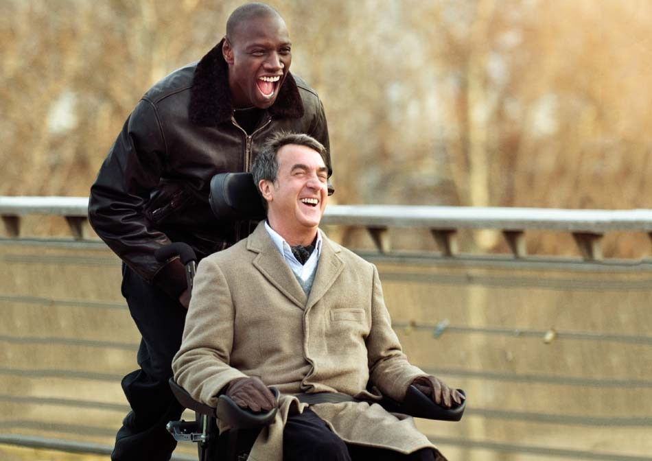
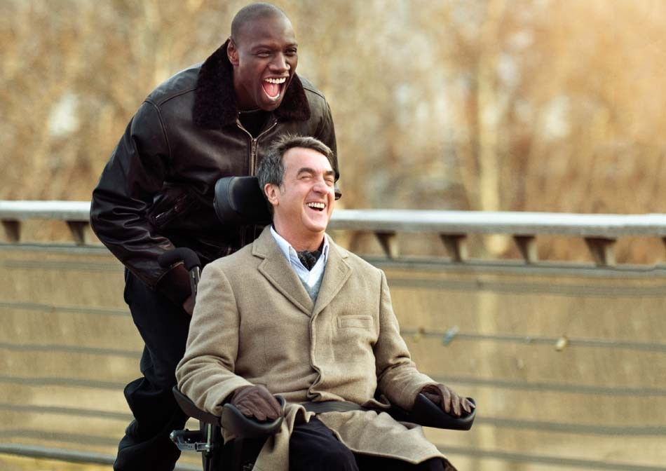

Intouchables (2011)
Norsk tittel: De Urørlige
Engelsk tittel: The Intouchables
| 112 minutter | FRA |
 


Regissørene: Olivier Nakache, Eric Toledano
Skuespillerer: Alba Gaïa Kraghede Bellugi, Anne Le Ny, Audrey Fleurot, Clotilde Mollet, Francois Cluzet, Omar Sy
Sjanger: drama, biografi, komedie
Handling
Den sanne historien om to menn som aldri skulle ha møtt hverandre - De Urørlige er en oppløftende komedie om vennskap, tillit og menneskelige muligheter. Mangemillionæren Philippe er lam fra nakken og ned etter en paragliderulykke, og må leve resten av livet i rullestol. Han bor i luksuriøse omgivelser i Paris og skal ansette en ny pleieassistent. Den eneste av søkerne som skiller seg ut er Driss - den unge mannen som har levert søknaden kun fordi han må vise at han er aktiv arbeidssøker for å beholde trygdepengene. Snart begynner et usannsynlig kameratskap forankret i ærlighet og humor mellom to individer som på overflaten ikke ville hatt noe til felles. De Urørlige er basert på en utrolig, men sann historie. Filmen, som er sett av 20 millioner franskmenn, har blitt et internasjonalt fenomen og er den mest inntjenende ikke-engelskspråklige filmen i historien. (Cover)